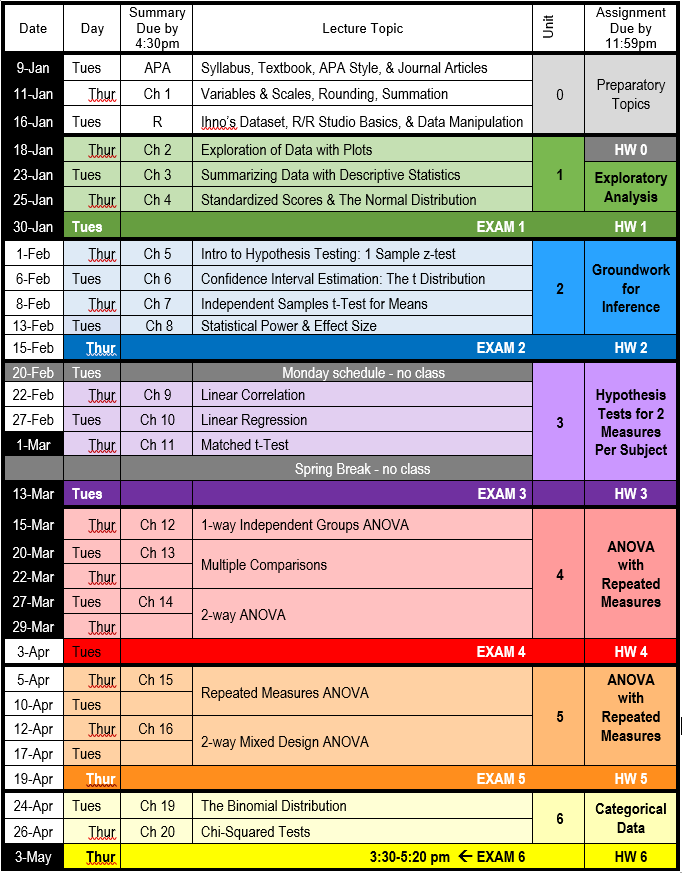

Research Design and Analysis I
Psy 6600 and Educ 6600: Quantitative Methods I
Sarah Schwartz and Tyson Barrett
January 18 2018
Psy 6600 or Educ 6600
The text book:

Cohen Textbook
The textbook is available through the USU library
- View and read it online for free
- You must be either on campus or on the VPN
- Download the entire book for free
- requires you to
- create an account
- download/install some software
- only can be ‘checked out’ for 14 days
- requires you to
Course Files
All files may be downloaded from the BOX folder
- Icons and image files
- Datasets (excel or SPSS format)
- Assignments
Instructor Websites
Sarah’s website: www.sarahschwartzstats.com
Tyson’s website: www.tysonbarrett.com/teaching/
Course Schedule
